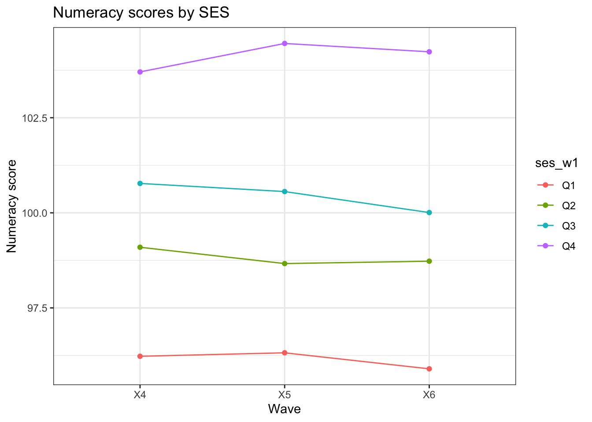

Childcare attendace in wave 1 (age = 3-19months)
Looked by others in wave 1
Daycare center attendace

Childcare attendace in wave 2 (age = 2-3 years) - Looked by others in wave 2

Daycare center attendace

Preschool/kinder attendace

Non-parental care - wave 3
Preschool/kinder attendace (age = 4-5 years)

At school (age = 4-5 years)
Mean Naplan scores by SES
Naplan Year 3 (wave 5)

Naplan Year 5 (wave 6)

Naplan Year 7 (wave 7)

Naplan Year 9 (wave 8)

Post School (wave 9)
Enrolled in institution/ attend secondary school

Intended qualification

#—————————–
Interaction effect - Two-way Anova - Ability X SES
Academic scores (academic_index) X SES per wave
Univariate Type III Repeated-Measures ANOVA Assuming Sphericity
Sum Sq num Df Error SS den Df F value Pr(>F)
(Intercept) 54960567 1 390433 1933 2.7210e+05 <2e-16 ***
ses_w1 56748 3 390433 1933 9.3651e+01 <2e-16 ***
wave 98 2 119843 3866 1.5744e+00 0.2073
ses_w1:wave 309 6 119843 3866 1.6617e+00 0.1262
---
Signif. codes: 0 '***' 0.001 '**' 0.01 '*' 0.05 '.' 0.1 ' ' 1
Mauchly Tests for Sphericity
Test statistic p-value
wave 0.96976 1.3118e-13
ses_w1:wave 0.96976 1.3118e-13
Greenhouse-Geisser and Huynh-Feldt Corrections
for Departure from Sphericity
GG eps Pr(>F[GG])
wave 0.97065 0.2079
ses_w1:wave 0.97065 0.1286
HF eps Pr(>F[HF])
wave 0.9716086 0.2079092
ses_w1:wave 0.9716086 0.1285367 wave ses_w1 emmean SE df lower.CL upper.CL
X4 Q1 95.6 0.529 1933 94.6 96.6
X5 Q1 96.0 0.519 1933 95.0 97.0
X6 Q1 95.7 0.520 1933 94.7 96.8
X4 Q2 98.9 0.433 1933 98.1 99.8
X5 Q2 98.7 0.425 1933 97.9 99.5
X6 Q2 98.7 0.426 1933 97.9 99.5
X4 Q3 100.8 0.408 1933 100.0 101.6
X5 Q3 100.5 0.400 1933 99.7 101.2
X6 Q3 100.1 0.401 1933 99.3 100.9
X4 Q4 104.3 0.389 1933 103.6 105.1
X5 Q4 105.2 0.382 1933 104.4 105.9
X6 Q4 104.5 0.383 1933 103.8 105.3
Confidence level used: 0.95 Literacy scores (literacy_index) X SES per wave
Univariate Type III Repeated-Measures ANOVA Assuming Sphericity
Sum Sq num Df Error SS den Df F value Pr(>F)
(Intercept) 59729600 1 393391 2100 3.1885e+05 < 2e-16 ***
ses_w1 54527 3 393391 2100 9.7026e+01 < 2e-16 ***
wave 109 2 159440 4200 1.4316e+00 0.23904
ses_w1:wave 464 6 159440 4200 2.0374e+00 0.05739 .
---
Signif. codes: 0 '***' 0.001 '**' 0.01 '*' 0.05 '.' 0.1 ' ' 1
Mauchly Tests for Sphericity
Test statistic p-value
wave 0.96567 1.1938e-16
ses_w1:wave 0.96567 1.1938e-16
Greenhouse-Geisser and Huynh-Feldt Corrections
for Departure from Sphericity
GG eps Pr(>F[GG])
wave 0.96681 0.23927
ses_w1:wave 0.96681 0.05975 .
---
Signif. codes: 0 '***' 0.001 '**' 0.01 '*' 0.05 '.' 0.1 ' ' 1
HF eps Pr(>F[HF])
wave 0.967683 0.23926522
ses_w1:wave 0.967683 0.05969002 wave ses_w1 emmean SE df lower.CL upper.CL
X4 Q1 95.9 0.500 2100 95.0 96.9
X5 Q1 96.0 0.503 2100 95.0 97.0
X6 Q1 96.0 0.504 2100 95.0 97.0
X4 Q2 99.1 0.408 2100 98.3 99.9
X5 Q2 99.2 0.410 2100 98.4 100.0
X6 Q2 99.1 0.411 2100 98.3 99.9
X4 Q3 100.8 0.384 2100 100.1 101.6
X5 Q3 100.3 0.387 2100 99.5 101.0
X6 Q3 100.2 0.388 2100 99.4 100.9
X4 Q4 104.2 0.367 2100 103.5 104.9
X5 Q4 105.2 0.369 2100 104.4 105.9
X6 Q4 104.0 0.370 2100 103.3 104.7
Confidence level used: 0.95 Numeracy scores (numeracy_index) X SES per wave
Univariate Type III Repeated-Measures ANOVA Assuming Sphericity
Sum Sq num Df Error SS den Df F value Pr(>F)
(Intercept) 55391769 1 380232 1947 2.8364e+05 <2e-16 ***
ses_w1 46128 3 380232 1947 7.8734e+01 <2e-16 ***
wave 84 2 144410 3894 1.1365e+00 0.3211
ses_w1:wave 351 6 144410 3894 1.5791e+00 0.1489
---
Signif. codes: 0 '***' 0.001 '**' 0.01 '*' 0.05 '.' 0.1 ' ' 1
Mauchly Tests for Sphericity
Test statistic p-value
wave 0.975 1.994e-11
ses_w1:wave 0.975 1.994e-11
Greenhouse-Geisser and Huynh-Feldt Corrections
for Departure from Sphericity
GG eps Pr(>F[GG])
wave 0.97561 0.3201
ses_w1:wave 0.97561 0.1508
HF eps Pr(>F[HF])
wave 0.976572 0.3201718
ses_w1:wave 0.976572 0.1507566 wave ses_w1 emmean SE df lower.CL upper.CL
X4 Q1 96.2 0.530 1947 95.2 97.3
X5 Q1 96.3 0.525 1947 95.3 97.3
X6 Q1 95.9 0.519 1947 94.9 96.9
X4 Q2 99.1 0.435 1947 98.2 99.9
X5 Q2 98.7 0.431 1947 97.8 99.5
X6 Q2 98.7 0.426 1947 97.9 99.6
X4 Q3 100.8 0.410 1947 100.0 101.6
X5 Q3 100.6 0.406 1947 99.8 101.4
X6 Q3 100.0 0.402 1947 99.2 100.8
X4 Q4 103.7 0.392 1947 102.9 104.5
X5 Q4 104.5 0.388 1947 103.7 105.2
X6 Q4 104.2 0.384 1947 103.5 105.0
Confidence level used: 0.95 
Interaction effect - Two-way Anova - Ability X Daycare attendance (w1)
Academic scores (academic_index) X S Daycare attendance (w1)
Univariate Type III Repeated-Measures ANOVA Assuming Sphericity
Sum Sq num Df Error SS den Df F value Pr(>F)
(Intercept) 26015624 1 447398 1937 1.1263e+05 <2e-16 ***
childcare_daycare_w1 302 1 447398 1937 1.3085e+00 0.2528
wave 118 2 120205 3874 1.8990e+00 0.1499
childcare_daycare_w1:wave 45 2 120205 3874 7.2950e-01 0.4822
---
Signif. codes: 0 '***' 0.001 '**' 0.01 '*' 0.05 '.' 0.1 ' ' 1
Mauchly Tests for Sphericity
Test statistic p-value
wave 0.97015 1.8158e-13
childcare_daycare_w1:wave 0.97015 1.8158e-13
Greenhouse-Geisser and Huynh-Feldt Corrections
for Departure from Sphericity
GG eps Pr(>F[GG])
wave 0.97101 0.1512
childcare_daycare_w1:wave 0.97101 0.4784
HF eps Pr(>F[HF])
wave 0.9719726 0.1511335
childcare_daycare_w1:wave 0.9719726 0.4785589 wave childcare_daycare_w1 emmean SE df lower.CL upper.CL
X4 0 100.4 0.2416 1937 99.96 100.9
X5 0 100.6 0.2398 1937 100.17 101.1
X6 0 100.3 0.2387 1937 99.88 100.8
X4 1 101.4 0.6369 1937 100.18 102.7
X5 1 101.4 0.6321 1937 100.13 102.6
X6 1 100.7 0.6291 1937 99.45 101.9
Confidence level used: 0.95 Literacy scores (literacy_index) X Daycare in w1 per wave
Univariate Type III Repeated-Measures ANOVA Assuming Sphericity
Sum Sq num Df Error SS den Df F value Pr(>F)
(Intercept) 28067237 1 447528 2104 1.3195e+05 < 2e-16
childcare_daycare_w1 648 1 447528 2104 3.0458e+00 0.08109
wave 206 2 160433 4208 2.6988e+00 0.06740
childcare_daycare_w1:wave 113 2 160433 4208 1.4766e+00 0.22854
(Intercept) ***
childcare_daycare_w1 .
wave .
childcare_daycare_w1:wave
---
Signif. codes: 0 '***' 0.001 '**' 0.01 '*' 0.05 '.' 0.1 ' ' 1
Mauchly Tests for Sphericity
Test statistic p-value
wave 0.96592 1.4612e-16
childcare_daycare_w1:wave 0.96592 1.4612e-16
Greenhouse-Geisser and Huynh-Feldt Corrections
for Departure from Sphericity
GG eps Pr(>F[GG])
wave 0.96704 0.0693 .
childcare_daycare_w1:wave 0.96704 0.2289
---
Signif. codes: 0 '***' 0.001 '**' 0.01 '*' 0.05 '.' 0.1 ' ' 1
HF eps Pr(>F[HF])
wave 0.9679154 0.06925004
childcare_daycare_w1:wave 0.9679154 0.22893095 wave childcare_daycare_w1 emmean SE df lower.CL upper.CL
X4 0 100.5 0.2267 2104 100.01 100.9
X5 0 100.7 0.2307 2104 100.21 101.1
X6 0 100.4 0.2282 2104 99.90 100.8
X4 1 101.9 0.6015 2104 100.74 103.1
X5 1 101.6 0.6121 2104 100.44 102.8
X6 1 100.8 0.6054 2104 99.64 102.0
Confidence level used: 0.95 Numeracy scores (numeracy_index) X Daycare w1 per wave
Univariate Type III Repeated-Measures ANOVA Assuming Sphericity
Sum Sq num Df Error SS den Df F value Pr(>F)
(Intercept) 26195403 1 426835 1951 1.1974e+05 <2e-16 ***
childcare_daycare_w1 83 1 426835 1951 3.8020e-01 0.5375
wave 50 2 144788 3902 6.7680e-01 0.5083
childcare_daycare_w1:wave 6 2 144788 3902 7.8700e-02 0.9243
---
Signif. codes: 0 '***' 0.001 '**' 0.01 '*' 0.05 '.' 0.1 ' ' 1
Mauchly Tests for Sphericity
Test statistic p-value
wave 0.97461 1.2898e-11
childcare_daycare_w1:wave 0.97461 1.2898e-11
Greenhouse-Geisser and Huynh-Feldt Corrections
for Departure from Sphericity
GG eps Pr(>F[GG])
wave 0.97524 0.5047
childcare_daycare_w1:wave 0.97524 0.9204
HF eps Pr(>F[HF])
wave 0.9762029 0.5048719
childcare_daycare_w1:wave 0.9762029 0.9205803 wave childcare_daycare_w1 emmean SE df lower.CL upper.CL
X4 0 100.4 0.2399 1951 99.96 100.9
X5 0 100.5 0.2400 1951 100.06 101.0
X6 0 100.3 0.2378 1951 99.79 100.7
X4 1 100.9 0.6306 1951 99.68 102.2
X5 1 100.9 0.6308 1951 99.62 102.1
X6 1 100.5 0.6250 1951 99.29 101.7
Confidence level used: 0.95 Interaction effect - Two-way Anova - Ability X Daycare attendance (w2)
Academic scores (academic_index) X Daycare attendance (w2)
Univariate Type III Repeated-Measures ANOVA Assuming Sphericity
Sum Sq num Df Error SS den Df F value Pr(>F)
(Intercept) 56623274 1 428589 1884 2.4891e+05 <2e-16 ***
childcare_daycare_w2 0 1 428589 1884 8.0000e-04 0.9771
wave 80 2 117026 3768 1.2823e+00 0.2775
childcare_daycare_w2:wave 87 2 117026 3768 1.4006e+00 0.2466
---
Signif. codes: 0 '***' 0.001 '**' 0.01 '*' 0.05 '.' 0.1 ' ' 1
Mauchly Tests for Sphericity
Test statistic p-value
wave 0.9691 1.4606e-13
childcare_daycare_w2:wave 0.9691 1.4606e-13
Greenhouse-Geisser and Huynh-Feldt Corrections
for Departure from Sphericity
GG eps Pr(>F[GG])
wave 0.97002 0.2771
childcare_daycare_w2:wave 0.97002 0.2467
HF eps Pr(>F[HF])
wave 0.9710068 0.2771199
childcare_daycare_w2:wave 0.9710068 0.2466714 wave childcare_daycare_w2 emmean SE df lower.CL upper.CL
X4 0 100 0.306 1884 99.9 101
X5 0 101 0.303 1884 100.3 101
X6 0 101 0.302 1884 100.0 101
X4 1 101 0.343 1884 100.2 102
X5 1 101 0.338 1884 100.1 101
X6 1 100 0.337 1884 99.8 101
Confidence level used: 0.95 
Literacy scores (literacy_index) X Daycare in w2 per wave
Univariate Type III Repeated-Measures ANOVA Assuming Sphericity
Sum Sq num Df Error SS den Df F value Pr(>F)
(Intercept) 61582911 1 429778 2047 2.9331e+05 < 2e-16
childcare_daycare_w2 89 1 429778 2047 4.2160e-01 0.51620
wave 136 2 156033 4094 1.7808e+00 0.16863
childcare_daycare_w2:wave 195 2 156033 4094 2.5594e+00 0.07747
(Intercept) ***
childcare_daycare_w2
wave
childcare_daycare_w2:wave .
---
Signif. codes: 0 '***' 0.001 '**' 0.01 '*' 0.05 '.' 0.1 ' ' 1
Mauchly Tests for Sphericity
Test statistic p-value
wave 0.96593 3.9776e-16
childcare_daycare_w2:wave 0.96593 3.9776e-16
Greenhouse-Geisser and Huynh-Feldt Corrections
for Departure from Sphericity
GG eps Pr(>F[GG])
wave 0.96705 0.16990
childcare_daycare_w2:wave 0.96705 0.07939 .
---
Signif. codes: 0 '***' 0.001 '**' 0.01 '*' 0.05 '.' 0.1 ' ' 1
HF eps Pr(>F[HF])
wave 0.9679514 0.1698701
childcare_daycare_w2:wave 0.9679514 0.0793388 wave childcare_daycare_w2 emmean SE df lower.CL upper.CL
X4 0 101 0.288 2047 100.1 101
X5 0 101 0.292 2047 100.5 102
X6 0 101 0.289 2047 100.2 101
X4 1 101 0.321 2047 100.3 102
X5 1 101 0.326 2047 100.0 101
X6 1 100 0.323 2047 99.6 101
Confidence level used: 0.95 
Numeracy scores (numeracy_index) X Daycare in w2 per wave
Univariate Type III Repeated-Measures ANOVA Assuming Sphericity
Sum Sq num Df Error SS den Df F value Pr(>F)
(Intercept) 56878165 1 409470 1898 2.6365e+05 <2e-16 ***
childcare_daycare_w2 93 1 409470 1898 4.3240e-01 0.5109
wave 47 2 141267 3796 6.3280e-01 0.5312
childcare_daycare_w2:wave 62 2 141267 3796 8.3420e-01 0.4343
---
Signif. codes: 0 '***' 0.001 '**' 0.01 '*' 0.05 '.' 0.1 ' ' 1
Mauchly Tests for Sphericity
Test statistic p-value
wave 0.97329 7.04e-12
childcare_daycare_w2:wave 0.97329 7.04e-12
Greenhouse-Geisser and Huynh-Feldt Corrections
for Departure from Sphericity
GG eps Pr(>F[GG])
wave 0.97398 0.5271
childcare_daycare_w2:wave 0.97398 0.4316
HF eps Pr(>F[HF])
wave 0.9749713 0.5273018
childcare_daycare_w2:wave 0.9749713 0.4317098 wave childcare_daycare_w2 emmean SE df lower.CL upper.CL
X4 0 100 0.304 1898 99.7 101
X5 0 101 0.303 1898 99.9 101
X6 0 100 0.300 1898 99.8 101
X4 1 101 0.341 1898 100.2 102
X5 1 101 0.339 1898 100.1 101
X6 1 100 0.336 1898 99.8 101
Confidence level used: 0.95 
Interaction effect - Two-way Anova - Naplan X SES
Naplan reading X SES per wave
Univariate Type III Repeated-Measures ANOVA Assuming Sphericity
Sum Sq num Df Error SS den Df F value Pr(>F)
(Intercept) 2420514180 1 110231199 2617 57465.4512 < 2e-16 ***
ses_w1 13984731 3 110231199 2617 110.6705 < 2e-16 ***
wave 24530062 3 75557567 7851 849.6194 < 2e-16 ***
ses_w1:wave 204737 9 75557567 7851 2.3638 0.01157 *
---
Signif. codes: 0 '***' 0.001 '**' 0.01 '*' 0.05 '.' 0.1 ' ' 1
Mauchly Tests for Sphericity
Test statistic p-value
wave 0.82731 6.1587e-105
ses_w1:wave 0.82731 6.1587e-105
Greenhouse-Geisser and Huynh-Feldt Corrections
for Departure from Sphericity
GG eps Pr(>F[GG])
wave 0.88419 < 2e-16 ***
ses_w1:wave 0.88419 0.01564 *
---
Signif. codes: 0 '***' 0.001 '**' 0.01 '*' 0.05 '.' 0.1 ' ' 1
HF eps Pr(>F[HF])
wave 0.8851737 0.00000000
ses_w1:wave 0.8851737 0.01559584 wave ses_w1 emmean SE df lower.CL upper.CL
X5 Q1 375 6.09 2617 363 387
X6 Q1 447 5.86 2617 435 458
X7 Q1 476 6.48 2617 463 489
X8 Q1 488 7.87 2617 473 504
X5 Q2 408 4.84 2617 398 417
X6 Q2 486 4.66 2617 477 495
X7 Q2 520 5.15 2617 509 530
X8 Q2 537 6.25 2617 525 549
X5 Q3 424 4.56 2617 415 433
X6 Q3 509 4.39 2617 500 517
X7 Q3 536 4.86 2617 526 545
X8 Q3 571 5.89 2617 559 582
X5 Q4 467 4.19 2617 459 475
X6 Q4 551 4.04 2617 544 559
X7 Q4 582 4.46 2617 573 590
X8 Q4 610 5.42 2617 600 621
Confidence level used: 0.95 
Naplan numeracy X SES per wave
Univariate Type III Repeated-Measures ANOVA Assuming Sphericity
Sum Sq num Df Error SS den Df F value Pr(>F)
(Intercept) 2335785909 1 109116389 2617 56020.4731 < 2.2e-16 ***
ses_w1 13465870 3 109116389 2617 107.6532 < 2.2e-16 ***
wave 37162179 3 82154570 7851 1183.7859 < 2.2e-16 ***
ses_w1:wave 540253 9 82154570 7851 5.7365 5.662e-08 ***
---
Signif. codes: 0 '***' 0.001 '**' 0.01 '*' 0.05 '.' 0.1 ' ' 1
Mauchly Tests for Sphericity
Test statistic p-value
wave 0.75014 2.7734e-160
ses_w1:wave 0.75014 2.7734e-160
Greenhouse-Geisser and Huynh-Feldt Corrections
for Departure from Sphericity
GG eps Pr(>F[GG])
wave 0.83513 < 2.2e-16 ***
ses_w1:wave 0.83513 5.567e-07 ***
---
Signif. codes: 0 '***' 0.001 '**' 0.01 '*' 0.05 '.' 0.1 ' ' 1
HF eps Pr(>F[HF])
wave 0.8359928 0.000000e+00
ses_w1:wave 0.8359928 5.500265e-07 wave ses_w1 emmean SE df lower.CL upper.CL
X5 Q1 356 5.43 2617 345 366
X6 Q1 437 5.75 2617 426 449
X7 Q1 478 6.65 2617 465 491
X8 Q1 488 8.58 2617 471 505
X5 Q2 383 4.32 2617 374 391
X6 Q2 468 4.57 2617 459 477
X7 Q2 528 5.29 2617 517 538
X8 Q2 536 6.82 2617 523 550
X5 Q3 400 4.07 2617 392 408
X6 Q3 491 4.31 2617 482 499
X7 Q3 538 4.98 2617 528 547
X8 Q3 569 6.43 2617 556 581
X5 Q4 434 3.74 2617 427 441
X6 Q4 533 3.96 2617 525 540
X7 Q4 586 4.58 2617 578 595
X8 Q4 621 5.91 2617 609 632
Confidence level used: 0.95 
Interaction effect - Two-way Anova - Naplan X Daycare w1
Naplan reading X SES per wave
Univariate Type III Repeated-Measures ANOVA Assuming Sphericity
Sum Sq num Df Error SS den Df F value Pr(>F)
(Intercept) 1235706789 1 124366970 2623 26062.0557 <2e-16
childcare_daycare_w1 82660 1 124366970 2623 1.7434 0.1868
wave 12593026 3 76105388 7869 434.0233 <2e-16
childcare_daycare_w1:wave 19546 3 76105388 7869 0.6737 0.5681
(Intercept) ***
childcare_daycare_w1
wave ***
childcare_daycare_w1:wave
---
Signif. codes: 0 '***' 0.001 '**' 0.01 '*' 0.05 '.' 0.1 ' ' 1
Mauchly Tests for Sphericity
Test statistic p-value
wave 0.82385 1.4992e-107
childcare_daycare_w1:wave 0.82385 1.4992e-107
Greenhouse-Geisser and Huynh-Feldt Corrections
for Departure from Sphericity
GG eps Pr(>F[GG])
wave 0.88174 <2e-16 ***
childcare_daycare_w1:wave 0.88174 0.5499
---
Signif. codes: 0 '***' 0.001 '**' 0.01 '*' 0.05 '.' 0.1 ' ' 1
HF eps Pr(>F[HF])
wave 0.8827123 9.191755e-231
childcare_daycare_w1:wave 0.8827123 5.500626e-01 wave childcare_daycare_w1 emmean SE df lower.CL upper.CL
X5 0 426 2.65 2623 420 431
X6 0 506 2.58 2623 501 511
X7 0 536 2.83 2623 530 541
X8 0 562 3.43 2623 555 569
X5 1 431 6.88 2623 417 444
X6 1 516 6.70 2623 503 530
X7 1 550 7.34 2623 535 564
X8 1 566 8.91 2623 548 583
Confidence level used: 0.95 
Naplan numeracy X SES per wave
Univariate Type III Repeated-Measures ANOVA Assuming Sphericity
Sum Sq num Df Error SS den Df F value Pr(>F)
(Intercept) 1186412176 1 123129040 2623 25273.9657 <2e-16
childcare_daycare_w1 30673 1 123129040 2623 0.6534 0.4190
wave 18601065 3 82820586 7869 589.1119 <2e-16
childcare_daycare_w1:wave 47817 3 82820586 7869 1.5144 0.2086
(Intercept) ***
childcare_daycare_w1
wave ***
childcare_daycare_w1:wave
---
Signif. codes: 0 '***' 0.001 '**' 0.01 '*' 0.05 '.' 0.1 ' ' 1
Mauchly Tests for Sphericity
Test statistic p-value
wave 0.74601 8.6969e-164
childcare_daycare_w1:wave 0.74601 8.6969e-164
Greenhouse-Geisser and Huynh-Feldt Corrections
for Departure from Sphericity
GG eps Pr(>F[GG])
wave 0.83243 <2e-16 ***
childcare_daycare_w1:wave 0.83243 0.2149
---
Signif. codes: 0 '***' 0.001 '**' 0.01 '*' 0.05 '.' 0.1 ' ' 1
HF eps Pr(>F[HF])
wave 0.8332863 1.772952e-288
childcare_daycare_w1:wave 0.8332863 2.148537e-01 wave childcare_daycare_w1 emmean SE df lower.CL upper.CL
X5 0 399 2.36 2623 394 404
X6 0 489 2.53 2623 484 494
X7 0 540 2.91 2623 535 546
X8 0 566 3.73 2623 559 573
X5 1 405 6.13 2623 393 417
X6 1 497 6.56 2623 484 510
X7 1 552 7.54 2623 537 567
X8 1 561 9.70 2623 542 580
Confidence level used: 0.95